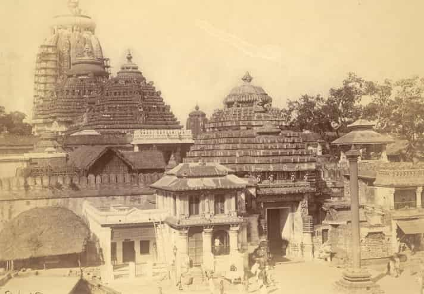

Histroy of Jagannath Temple
The temple was rebuilt by the King of the Eastern Ganga dynasty, Anantavarman Chodaganga, in the 10th
century CE, as described by the Kendupatna copper-plate inscription of his descendant, Narasimhadeva
II.[1] Anantavarman was originally a Shaivite, and became a Vaishnavite sometime after he conquered the
Utkala region, in which the temple is located, in 1112 CE. A 1134–1135 CE inscription records his donation
to the temple. Therefore, the temple construction must have started sometime after 1112 CE.[12]
Drawing of Jagannath temple from the book L'Inde des rajahs : voyage dans l'Inde centrale et dans les
présidences de Bombay et de Bengale, 1877 According to a story in the temple chronicles, it was founded by
Anangabhimadeva II. Different chronicles
variously mention the year of construction as 1196, 1197, 1205, 1216, or 1226.[13] This suggests that the
temple's construction was completed or that the temple was renovated during the reign of Anantavarman's
son, Anangabhima.[14] The temple complex was further developed during the reigns of the subsequent kings,
including those of the Ganga dynasty and the Gajapati dynasty.[15]

The history of the Jagannath Temple can be traced back over a thousand years, with the first mentions of
the temple dating to the 12th century. It is believed to have been built during the reign of King Anantavarman
Chodaganga Deva, of the Eastern Ganga dynasty, in the 12th century. The temple’s construction marked the
beginning of a new era in the religious and cultural landscape of the region.
The temple’s unique feature is its association with Lord Jagannath, an incarnation of Lord Vishnu. Jagannath
is known for his unconventional and mystifying form, with large, wooden idols representing him. The principal
idols of Lord Jagannath, along with his brother Balabhadra and sister Subhadra, are made from neem wood and
are renewed every twelve to nineteen years. This practice is an integral part of the temple’s traditions.